攻略大全 / 心金 / 魂银（详细图文） / 地图总览
11号道路 → 深灰道馆
第 24 节 · 通关后 · 途经 地鼠洞穴、2号道路、深灰市
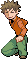
小刚11号道路
11号道路是一条草地小路，位于12号道路和西边的枯叶市之间。
训练家
- Psychic Herman₽1248
 蛋蛋 Lv.39蛋蛋 Lv.39
蛋蛋 Lv.39蛋蛋 Lv.39 椰蛋树 Lv.39
椰蛋树 Lv.39 - 短裤小子 Jason₽672
 穿山王 Lv.42
穿山王 Lv.42 叉字蝠 Lv.42
叉字蝠 Lv.42 - 短裤小子 Owen₽704
 卡蒂狗 Lv.44
卡蒂狗 Lv.44 - Psychic Fidel₽1376天然鸟 Lv.43
可遇到的宝可梦
 小拉达草丛 · Lv.15 · 30%
小拉达草丛 · Lv.15 · 30% 小磁怪草丛 · Lv.15 · 20%
小磁怪草丛 · Lv.15 · 20% 催眠貘草丛 · Lv.14, 16 · 40%
催眠貘草丛 · Lv.14, 16 · 40% 引梦貘人草丛 · Lv.16 · 10%
引梦貘人草丛 · Lv.16 · 10%- 头锤（A 组树）
 烈雀头锤 · Lv.13-14 · 50%
烈雀头锤 · Lv.13-14 · 50% 赫拉克罗斯头锤 · Lv.13-14 · 30%
赫拉克罗斯头锤 · Lv.13-14 · 30% 三蜜蜂头锤 · Lv.13-14 · 20%
三蜜蜂头锤 · Lv.13-14 · 20%- 头锤（B 组树）
- 烈雀头锤 · Lv.15-16 · 80%
- 三蜜蜂头锤 · Lv.15-16 · 20%
- 特殊
 正电拍拍丰缘音乐 · Lv.14-15 · 20%
正电拍拍丰缘音乐 · Lv.14-15 · 20% 負电拍拍丰缘音乐 · Lv.15 · 20%
負电拍拍丰缘音乐 · Lv.15 · 20% 小猫怪神奥音乐 · Lv.14-15 · 40%
小猫怪神奥音乐 · Lv.14-15 · 40%
道具
- 招式学习器86（打草结）道路东北角
- 绿球果道路中间的空地上，树上（每天一次）
 活力碎片中北部区域，穿过高草丛的小路尽头，两道栅栏之间（隐藏道具）
活力碎片中北部区域，穿过高草丛的小路尽头，两道栅栏之间（隐藏道具）
↓ 下一站：枯叶市
枯叶市
路障
野生的卡比兽还睡在枯叶市东边，挡住了往返11号道路的路，刚好也挡住了地鼠洞穴的西边入口。想叫醒它，先把宝可装置的收音机调到圆盘中间偏上的位置，然后调查卡比兽，把收音机放在它身边。宝可梦之笛的音乐会把它从睡梦中吵醒，它会怒气冲冲地发起攻击！
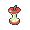
吃剩的东西地鼠洞穴

地鼠洞穴是一条几乎横贯整个地区的长隧道，连接枯叶市和2号道路东侧。顾名思义，这里原生的宝可梦只有地鼠和它的进化型三地鼠。浅红市的海滩被堵住了，这里是目前去关都西部的唯一通路。
可遇到的宝可梦
 地鼠洞窟 · Lv.13, 15, 17, 19 · 90%
地鼠洞窟 · Lv.13, 15, 17, 19 · 90% 三地鼠洞窟 · Lv.19, 24, 29 · 10%
三地鼠洞窟 · Lv.19, 24, 29 · 10%- 特殊
 独角犀牛交换 · 与换出去的宝可梦同等级 · 1 只，星期一、星期六（仅在宝可装置登记了小刚的电话之后）
独角犀牛交换 · 与换出去的宝可梦同等级 · 1 只，星期一、星期六（仅在宝可装置登记了小刚的电话之后） 幕下力士丰缘音乐 · Lv.19 · 20%
幕下力士丰缘音乐 · Lv.19 · 20% 阿勃梭鲁丰缘音乐 · Lv.15, 17 · 20%
阿勃梭鲁丰缘音乐 · Lv.15, 17 · 20%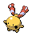
铃铛响神奥音乐 · Lv.19 · 20% 铜镜怪神奥音乐 · Lv.15, 17 · 20%
铜镜怪神奥音乐 · Lv.15, 17 · 20%
道具
 活力块地面层，南北向那座桥的东边，岩石上（隐藏道具）
活力块地面层，南北向那座桥的东边，岩石上（隐藏道具）- 之后再来
 特攻增强剂上层，西北边的死胡同（隐藏道具，需要攀岩）
特攻增强剂上层，西北边的死胡同（隐藏道具，需要攀岩） ＰＰ极限提升剂上层，北边两座桥和南边那座桥之间的小凹处（需要攀岩）
ＰＰ极限提升剂上层，北边两座桥和南边那座桥之间的小凹处（需要攀岩）- 岩石薰香上层，南边那座桥的南边（需要攀岩）
- 千香果交换得到的独角犀牛 Hornlette 携带
↓ 下一站：2号道路
2号道路
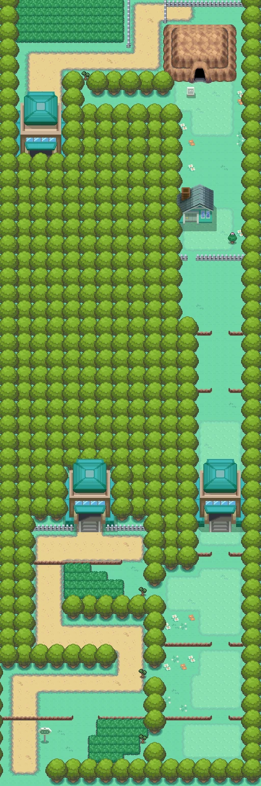
相邻↑ 深灰市
2号道路连接常青市和深灰市。道路西侧大部分被一片叫常青森林的树林迷宫占据。
训练家
- 捕虫少年 Ed₽688
 结草儿 Lv.43
结草儿 Lv.43 大针蜂 Lv.43
大针蜂 Lv.43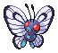
巴大蝶 Lv.43 - 捕虫少年 Doug₽592巴大蝶 Lv.39
 阿利多斯 Lv.37
阿利多斯 Lv.37 - 捕虫少年 Rob₽624大针蜂 Lv.40巴大蝶 Lv.39
可遇到的宝可梦
 绿毛虫仅心金草丛 · Lv.3-4 · 早 31% · 日 31% · 夜 0%
绿毛虫仅心金草丛 · Lv.3-4 · 早 31% · 日 31% · 夜 0% 铁甲蛹仅心金草丛 · Lv.5 · 早 20% · 日 0% · 夜 0%
铁甲蛹仅心金草丛 · Lv.5 · 早 20% · 日 0% · 夜 0%- 巴大蝶仅心金草丛 · Lv.7-8 · 早 10% · 日 10% · 夜 0%
 独角虫仅魂银草丛 · Lv.4 · 早 1% · 日 1% · 夜 1%
独角虫仅魂银草丛 · Lv.4 · 早 1% · 日 1% · 夜 1%- 独角虫仅魂银草丛 · Lv.3 · 早 10% · 日 30% · 夜 0%
- 独角虫仅魂银草丛 · Lv.5 · 早 0% · 日 0% · 夜 10%
 铁壳蛹仅魂银草丛 · Lv.5 · 早 20% · 日 20% · 夜 0%
铁壳蛹仅魂银草丛 · Lv.5 · 早 20% · 日 20% · 夜 0%- 铁壳蛹仅魂银草丛 · Lv.3 · 早 0% · 日 0% · 夜 10%
- 铁壳蛹仅魂银草丛 · Lv.7 · 早 0% · 日 0% · 夜 1%
- 大针蜂仅魂银草丛 · Lv.7 · 早 10% · 日 0% · 夜 0%
- 大针蜂仅魂银草丛 · Lv.10 · 早 0% · 日 0% · 夜 4%
 波波仅心金草丛 · Lv.3 · 早 30% · 日 0% · 夜 0%
波波仅心金草丛 · Lv.3 · 早 30% · 日 0% · 夜 0%- 波波仅心金草丛 · Lv.3, 5 · 早 0% · 日 50% · 夜 0%
- 波波仅魂银草丛 · Lv.3 · 早 20% · 日 0% · 夜 0%
- 波波仅魂银草丛 · Lv.3, 7 · 早 0% · 日 40% · 夜 0%
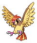
比比鸟仅心金草丛 · Lv.7 · 早 5% · 日 0% · 夜 0%- 比比鸟仅心金草丛 · Lv.7, 10 · 早 0% · 日 9% · 夜 0%
- 比比鸟仅魂银草丛 · Lv.7 · 早 0% · 日 5% · 夜 0%
 咕咕仅心金草丛 · Lv.3, 5 · 早 0% · 日 0% · 夜 50%
咕咕仅心金草丛 · Lv.3, 5 · 早 0% · 日 0% · 夜 50%- 咕咕仅魂银草丛 · Lv.3, 5 · 早 0% · 日 0% · 夜 60%
 猫头夜鹰仅心金草丛 · Lv.7, 10 · 早 0% · 日 0% · 夜 14%
猫头夜鹰仅心金草丛 · Lv.7, 10 · 早 0% · 日 0% · 夜 14%- 猫头夜鹰仅魂银草丛 · Lv.7 · 早 0% · 日 0% · 夜 14%
 芭瓢虫仅魂银草丛 · Lv.3 · 早 30% · 日 0% · 夜 0%
芭瓢虫仅魂银草丛 · Lv.3 · 早 30% · 日 0% · 夜 0%- 芭瓢虫仅魂银草丛 · Lv.10 · 早 0% · 日 4% · 夜 0%
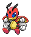
安瓢虫仅魂银草丛 · Lv.7, 10 · 早 9% · 日 0% · 夜 0% 圆丝蛛仅心金草丛 · Lv.10 · 早 4% · 日 0% · 夜 0%
圆丝蛛仅心金草丛 · Lv.10 · 早 4% · 日 0% · 夜 0%- 圆丝蛛仅心金草丛 · Lv.3-4 · 早 0% · 日 0% · 夜 31%
- 阿利多斯仅心金草丛 · Lv.7 · 早 0% · 日 0% · 夜 5%
- 头锤（A 组树）
- 咕咕头锤 · Lv.3-4 · 50%
 榛果球头锤 · Lv.3-4 · 30%
榛果球头锤 · Lv.3-4 · 30% 刺尾虫头锤 · Lv.3-4 · 20%
刺尾虫头锤 · Lv.3-4 · 20%- 头锤（B 组树）
- 咕咕头锤 · Lv.5-7 · 50%
- 芭瓢虫仅魂银头锤 · Lv.5-7 · 30%
- 圆丝蛛仅心金头锤 · Lv.5-7 · 30%
- 刺尾虫头锤 · Lv.5-7 · 20%
- 特殊
- 正电拍拍丰缘音乐 · Lv.3 · 20%
- 負电拍拍丰缘音乐 · Lv.5 · 20%
- 小猫怪神奥音乐 · Lv.3, 5 · 40%
- 绿毛虫仅心金草丛 · Lv.3-4 · 早 31% · 日 31% · 夜 0%
- 铁甲蛹仅心金草丛 · Lv.5 · 早 20% · 日 20% · 夜 0%
- 巴大蝶仅心金草丛 · Lv.7-8 · 早 10% · 日 0% · 夜 0%
- 独角虫仅魂银草丛 · Lv.3-4 · 早 11% · 日 31% · 夜 0%
- 独角虫仅魂银草丛 · Lv.4-5 · 早 0% · 日 0% · 夜 11%
- 铁壳蛹仅魂银草丛 · Lv.5 · 早 20% · 日 20% · 夜 0%
- 铁壳蛹仅魂银草丛 · Lv.3 · 早 0% · 日 0% · 夜 10%
- 铁壳蛹仅魂银草丛 · Lv.7 · 早 0% · 日 0% · 夜 1%
- 大针蜂仅魂银草丛 · Lv.7 · 早 10% · 日 0% · 夜 0%
- 大针蜂仅魂银草丛 · Lv.10 · 早 0% · 日 0% · 夜 4%
- 波波仅心金草丛 · Lv.3 · 早 30% · 日 0% · 夜 0%
- 波波仅心金草丛 · Lv.3, 7-8 · 早 0% · 日 40% · 夜 0%
- 波波仅魂银草丛 · Lv.3 · 早 20% · 日 0% · 夜 0%
- 波波仅魂银草丛 · Lv.3, 7 · 早 0% · 日 40% · 夜 0%
- 比比鸟仅心金草丛 · Lv.7 · 早 5% · 日 0% · 夜 0%
- 比比鸟仅心金草丛 · Lv.7, 10 · 早 0% · 日 9% · 夜 0%
- 比比鸟仅魂银草丛 · Lv.7 · 早 0% · 日 5% · 夜 0%
- 咕咕仅心金草丛 · Lv.3-5 · 早 0% · 日 0% · 夜 50%
- 咕咕仅魂银草丛 · Lv.3-5 · 早 0% · 日 0% · 夜 60%
- 猫头夜鹰仅心金草丛 · Lv.7-8, 10 · 早 0% · 日 0% · 夜 14%
- 猫头夜鹰仅魂银草丛 · Lv.7 · 早 0% · 日 0% · 夜 14%
- 芭瓢虫仅魂银草丛 · Lv.3 · 早 30% · 日 0% · 夜 0%
- 芭瓢虫仅魂银草丛 · Lv.10 · 早 0% · 日 4% · 夜 0%
- 安瓢虫仅魂银草丛 · Lv.7-10 · 早 9% · 日 0% · 夜 0%
- 圆丝蛛仅心金草丛 · Lv.10 · 早 4% · 日 0% · 夜 0%
- 圆丝蛛仅心金草丛 · Lv.3-4 · 早 0% · 日 0% · 夜 31%
- 阿利多斯仅心金草丛 · Lv.7 · 早 0% · 日 0% · 夜 5%
- 头锤（A 组树）
- 咕咕头锤 · Lv.3-4 · 50%
- 榛果球头锤 · Lv.3-4 · 30%
- 刺尾虫头锤 · Lv.3-4 · 20%
- 头锤（B 组树）
- 咕咕头锤 · Lv.5-7 · 50%
- 芭瓢虫仅魂银头锤 · Lv.5-7 · 30%
- 圆丝蛛仅心金头锤 · Lv.5-7 · 30%
- 刺尾虫头锤 · Lv.5-7 · 20%
- 特殊
- 正电拍拍丰缘音乐 · Lv.3 · 20%
- 負电拍拍丰缘音乐 · Lv.5 · 20%
- 小猫怪神奥音乐 · Lv.3, 5 · 40%
道具
- 东侧
 速度增强剂地鼠洞穴入口东北边
速度增强剂地鼠洞穴入口东北边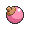
粉球果地鼠洞穴南边，树上（每天一次） 金珠房子里的男人给予
金珠房子里的男人给予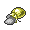
圣灰关口里，大木博士的一位助手给予 ＰＰ多项小补剂东南区域，从关口数第二对和第三对台阶之间
ＰＰ多项小补剂东南区域，从关口数第二对和第三对台阶之间- 西侧
- 随机树果登记捕虫少年 Doug 的电话后，他有时会送
- 随机树果登记捕虫少年 Rob 的电话后，他有时会送
友善的面孔
去地鼠洞穴附近的房子，和里面的男人说话。他住在荒郊野外，很久没有客人来了。有人陪他很高兴，送你一颗金珠表示感谢。
常青森林

常青森林是2号道路上一大片树林。这里是天然的迷宫，很容易迷路。
训练家
- 捕虫少年 Abner₽704巴大蝶 Lv.44大针蜂 Lv.44
 皮卡丘 Lv.44
皮卡丘 Lv.44 - 捕虫少年 Ellis₽736独角虫 Lv.28铁壳蛹 Lv.38大针蜂 Lv.46
- 捕虫少年 Stacey₽960铁甲蛹 Lv.52铁甲蛹 Lv.56铁甲蛹 Lv.60
- 捕虫少年 Dion₽800阿利多斯 Lv.50
- 捕虫少年 Dane₽768大针蜂 Lv.44巴大蝶 Lv.48
可遇到的宝可梦
- 绿毛虫仅心金草丛 · Lv.3 · 早 40% · 日 40% · 夜 0%
- 独角虫仅魂银草丛 · Lv.3 · 早 40% · 日 40% · 夜 0%
- 铁甲蛹仅心金草丛 · Lv.3, 5 · 早 30% · 日 30% · 夜 0%
- 铁壳蛹仅魂银草丛 · Lv.3, 5 · 早 30% · 日 30% · 夜 0%
- 波波草丛 · Lv.3 · 早 10% · 日 0% · 夜 0%
- 波波草丛 · Lv.3, 7 · 早 0% · 日 15% · 夜 0%
- 巴大蝶仅心金草丛 · Lv.7 · 早 10% · 日 0% · 夜 0%
- 大针蜂仅魂银草丛 · Lv.7 · 早 10% · 日 0% · 夜 0%
- 皮卡丘草丛 · Lv.4, 7 · 早 6% · 日 6% · 夜 0%
- 皮卡丘草丛 · Lv.4 · 早 0% · 日 0% · 夜 5%
- 比比鸟草丛 · Lv.7 · 早 4% · 日 9% · 夜 0%
- 咕咕草丛 · Lv.3, 5 · 早 0% · 日 0% · 夜 80%
- 猫头夜鹰草丛 · Lv.7 · 早 0% · 日 0% · 夜 15%
- 头锤（A 组树）
- 咕咕头锤 · Lv.3-4 · 50%
- 橡实果仅心金头锤 · Lv.3-4 · 30%
- 蘑蘑菇仅魂银头锤 · Lv.3-4 · 30%
- 芭瓢虫仅魂银头锤 · Lv.3-4 · 10%
- 圆丝蛛仅心金头锤 · Lv.3-4 · 10%
- 橡实果仅魂银头锤 · Lv.3-4 · 10%
- 蘑蘑菇仅心金头锤 · Lv.3-4 · 10%
- 头锤（B 组树）
- 猫头夜鹰头锤 · Lv.5-7 · 50%
- 橡实果仅心金头锤 · Lv.5-7 · 30%
- 蘑蘑菇仅魂银头锤 · Lv.5-7 · 30%
- 安瓢虫仅魂银头锤 · Lv.5-7 · 10%
- 阿利多斯仅心金头锤 · Lv.5-7 · 10%
- 橡实果仅魂银头锤 · Lv.5-7 · 10%
- 蘑蘑菇仅心金头锤 · Lv.5-7 · 10%
- 大量出现
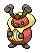
圆法师大量出现 · Lv.3, 5 · 40%- 特殊
 呆火驼丰缘音乐 · Lv.5 · 20%
呆火驼丰缘音乐 · Lv.5 · 20% 跳跳猪丰缘音乐 · Lv.3 · 20%
跳跳猪丰缘音乐 · Lv.3 · 20% 含羞苞神奥音乐 · Lv.3 · 20%
含羞苞神奥音乐 · Lv.3 · 20% 尖牙笼神奥音乐 · Lv.5 · 20%
尖牙笼神奥音乐 · Lv.5 · 20%
道具
 ＰＰ单项全补剂最西南边的那片高草丛（隐藏道具）
ＰＰ单项全补剂最西南边的那片高草丛（隐藏道具） 大蘑菇 ×2森林西南部，中西部区域最北边那处橙色花丛（隐藏道具）
大蘑菇 ×2森林西南部，中西部区域最北边那处橙色花丛（隐藏道具）
中东部区域，道路左边的一处橙色花丛（隐藏道具） 叶之石森林西南部，两道楼梯之间，那棵孤树的东边
叶之石森林西南部，两道楼梯之间，那棵孤树的东边 小蘑菇 ×3南边入口附近那棵孤树的北边，山坡上（隐藏道具）
小蘑菇 ×3南边入口附近那棵孤树的北边，山坡上（隐藏道具）
东南区域，泥地北边的山坡上（隐藏道具）
东北区域，森林最东北角的一处橙色花丛（隐藏道具）- 招式学习器77（自我暗示）东南区域，泥地上
- 蓝色玻璃哨东北区域，泥地上
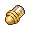
要害攻击西北区域，北边出口东偏南的泥地上 全复药北边出口东南边的死胡同（隐藏道具）
全复药北边出口东南边的死胡同（隐藏道具）
从南边入口沿小路往西北，在一棵孤树旁找到叶之石。跳下台阶回到入口，这次往东走。经过捕虫少年 Dane，在附近的泥地上拿招式学习器77（自我暗示）。转向北，在森林东侧和捕虫少年 Dion 对战。穿过高草丛继续往北，或者沿小路走，和捕虫少年 Stacey 对战。西北边的大片泥地上有蓝色玻璃哨。再往北，路分成两条；走东边的楼梯能到森林东北角，捕虫少年 Ellis 在那里绕圈跑。往西在树之间曲折前进，在最北边的泥地上找到要害攻击。去西南边的死胡同拿全复药，然后继续往西北。经过捕虫少年 Abner，就到森林的北边了。走出关口回到2号道路，继续往北去深灰市。
↓ 下一站：深灰市
深灰市

相邻↓ 2号道路
深灰市是一座宁静的城市，坐落在北边的山间，位于2号道路和3号道路之间。深灰科学博物馆和深灰道馆都在这里。
可遇到的宝可梦
- 头锤（A 组树）
- 咕咕头锤 · Lv.3-5 · 50%
- 榛果球头锤 · Lv.3-5 · 30%
- 刺尾虫头锤 · Lv.3-5 · 20%
- 头锤（B 组树）
- 咕咕头锤 · Lv.7-9 · 80%
- 刺尾虫头锤 · Lv.7-9 · 20%
- 头锤：栅栏边最上面的两棵树，从2号道路过去
- 刺尾虫头锤 · Lv.5-9 · 65%
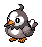
姆克儿头锤 · Lv.5-9 · 30%- 姆克儿头锤 · Lv.8-12 · 5%
- 赠送的宝可梦
 菊石兽贝壳化石 · Lv.20 · 化石复活
菊石兽贝壳化石 · Lv.20 · 化石复活 化石盔甲壳化石 · Lv.20 · 化石复活
化石盔甲壳化石 · Lv.20 · 化石复活 化石翼龙秘密琥珀 · Lv.20 · 化石复活
化石翼龙秘密琥珀 · Lv.20 · 化石复活 触手百合根状化石 · Lv.20 · 化石复活
触手百合根状化石 · Lv.20 · 化石复活 太古羽虫爪子化石 · Lv.20 · 化石复活
太古羽虫爪子化石 · Lv.20 · 化石复活 头盖龙头盖化石 · Lv.20 · 化石复活
头盖龙头盖化石 · Lv.20 · 化石复活 盾甲龙盾甲化石 · Lv.20 · 化石复活
盾甲龙盾甲化石 · Lv.20 · 化石复活- 特殊
- 天然鸟交换 · 与换出去的宝可梦同等级 · 1 只
道具
- 活力块南边入口附近，西边栅栏后面，从2号道路过去（隐藏道具）
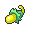
烛木果交换得到的天然鸟 Paul 携带 能力防守花园东侧（隐藏道具）
能力防守花园东侧（隐藏道具） 蓝球果东北边的小山上，两棵树中西边那棵（每天一次）
蓝球果东北边的小山上，两棵树中西边那棵（每天一次） 白球果东北边的小山上，两棵树中东边那棵（每天一次）
白球果东北边的小山上，两棵树中东边那棵（每天一次） 博识眼镜西北区域的死胡同（需要特殊能力）
博识眼镜西北区域的死胡同（需要特殊能力） ＰＰ提升剂深灰道馆西南边，岩石上（隐藏道具）
ＰＰ提升剂深灰道馆西南边，岩石上（隐藏道具）- 招式学习器80（岩崩）打败道馆馆主小刚后由他给予
 银色之羽仅心金去3号道路的东边出口附近，一位老爷爷给予
银色之羽仅心金去3号道路的东边出口附近，一位老爷爷给予 虹色之羽仅魂银去3号道路的东边出口附近，一位老爷爷给予
虹色之羽仅魂银去3号道路的东边出口附近，一位老爷爷给予
交换时间
去宝可梦中心，会找到一个想交换宝可梦的男人。他愿意用自己的天然鸟换一只鬼斯通。鬼斯通在8号道路能找到，它进化前的鬼斯在城都的喇叭芽之塔和铃铛塔也有。
深灰科学博物馆
深灰科学博物馆在城市北边，收藏各种文物和展品，以关都地区的化石和其他标本为主。接待员告诉来访者，因为比较大的标本都借给其他博物馆了，现在免费参观。
入口附近有一位工作人员（怪人）。他说以前有几颗陨石落在深灰市附近。博物馆很想把它们拿来展出，但据说陨石会发出奇怪的能量，没法搬走。
化石复活
在旁边的小房间里，另一个怪人负责化石复活。和他说话，交给他已知七种化石中的一种进行复活。复活需要一点时间，先离开建筑，过一会儿再回来领取古代宝可梦。
贝壳化石 → 菊石兽
甲壳化石 → 化石盔
秘密琥珀 → 化石翼龙
根状化石 → 触手百合
爪子化石 → 太古羽虫
头盖化石 → 头盖龙
盾甲化石 → 盾甲龙
深灰道馆
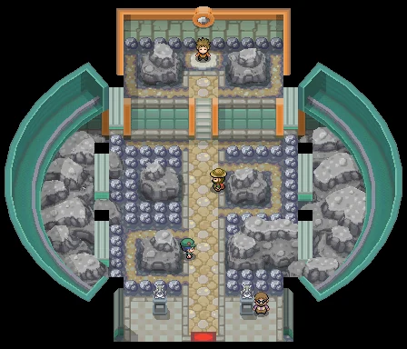
馆主：小刚
坚如磐石的宝可梦训练家
深灰道馆专精岩石属性宝可梦。岩石属性招式对虫、火、飞行、冰属性效果绝佳，而岩石属性宝可梦怕格斗、草、地面、钢、水属性招式。
道馆里是一座岩石庭园，到馆主之前只有两场可以不打的训练家对战。
因为都是双属性，小刚的五只宝可梦被草属性攻击打都会受巨大伤害。除此之外，水属性招式对他的隆隆石、独角犀牛和大岩蛇有效。小刚空闲时喜欢去月见山挖化石，得到了多刺菊石兽和镰刀盔这两只史前宝可梦。它们也都怕电属性攻击。
训练家
- 野营男 Jerry₽800
 钻角犀兽 Lv.50
钻角犀兽 Lv.50 - 登山男 Edwin₽1600
 隆隆岩 Lv.50
隆隆岩 Lv.50
道馆馆主 小刚 奖金 ₽6240
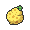
文柚果对战结束后，小刚会授予你灰色徽章。他还会送你招式学习器80（岩崩）作为奖品。
第二根羽毛
城镇东边的小山上站着一位老爷爷。和他说话，他会回忆年轻时在城都修行的日子。你让他想起了年轻时的自己，他很乐意把多年前在那里发现的宝物送给你：银色之羽（心金）/彩虹之羽（魂银）。有了这根闪闪发光的羽毛，就能找到城都两只传说之鸟中的第二只。
- 捕捉第二只传说之鸟的方法，请看第 14 节的「漩涡群岛」（心金）/「铃铛塔」（魂银）部分。
↓ 本篇到此结束：继续下一页
原文：Bulbapedia《Walkthrough:Pokémon HeartGold and SoulSilver/Part 24》（修订版本 4655615，），作者见原文页面历史。本页由 Eli 的杂货间翻译为中文，并有改动（重新排版、精简部分图注）。原文与译文均以 CC BY-NC-SA 2.5 授权。配图来自原站，版权归原作者与游戏厂商；地图截图和人物图来自 Bulbagarden Archives，游戏画面版权归 Nintendo / Game Freak / The Pokémon Company。道具与属性图标来自 PokeAPI sprites。